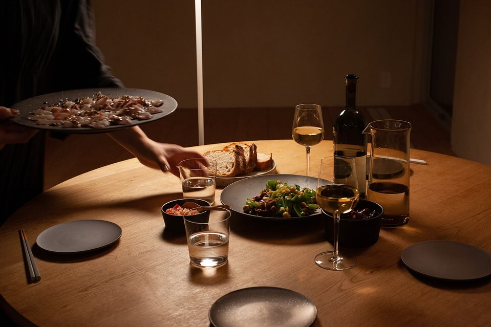
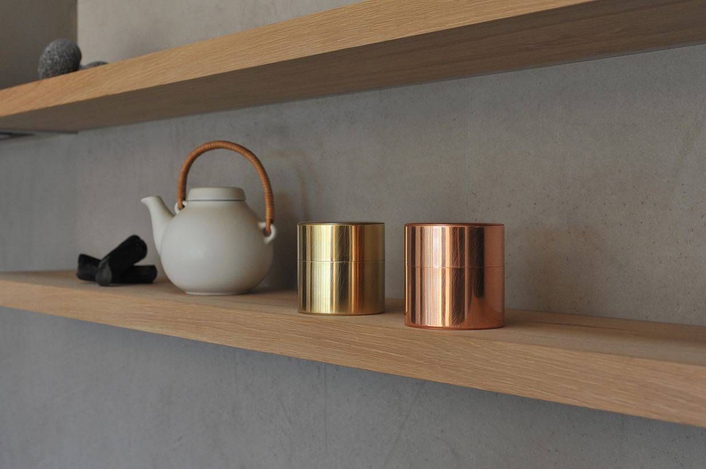
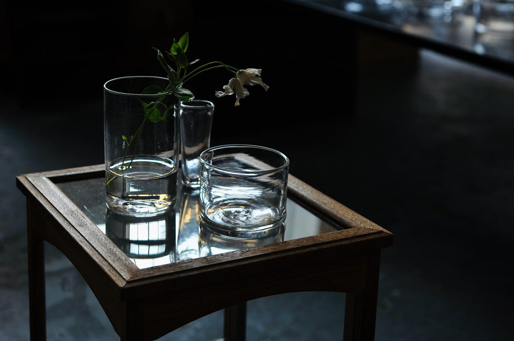
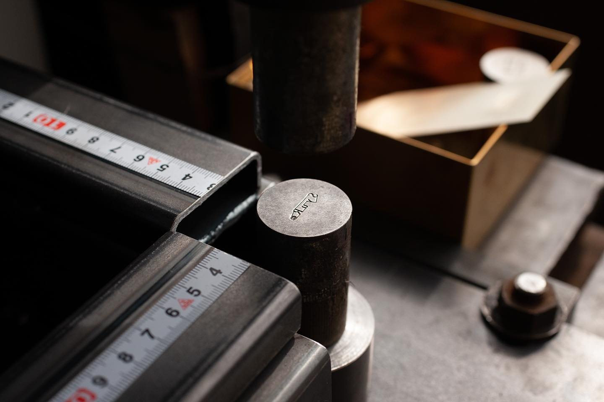
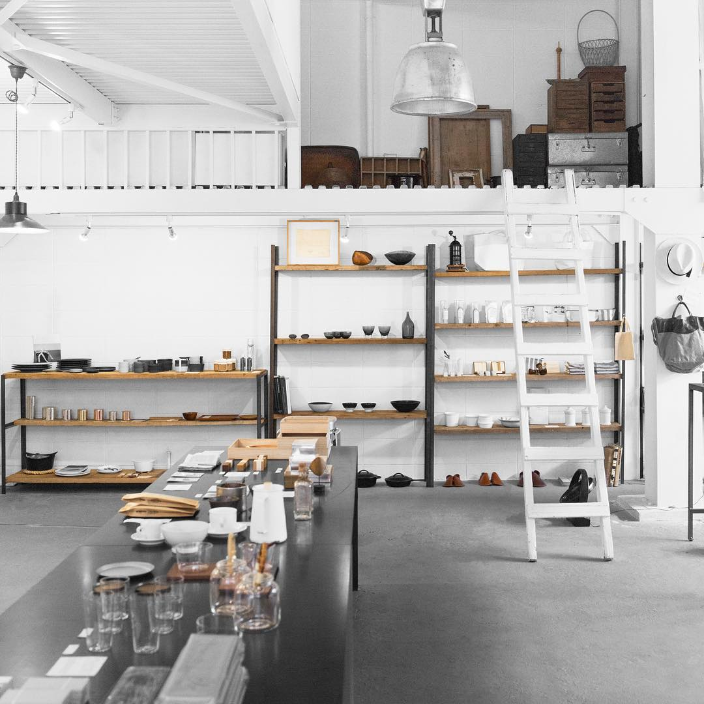
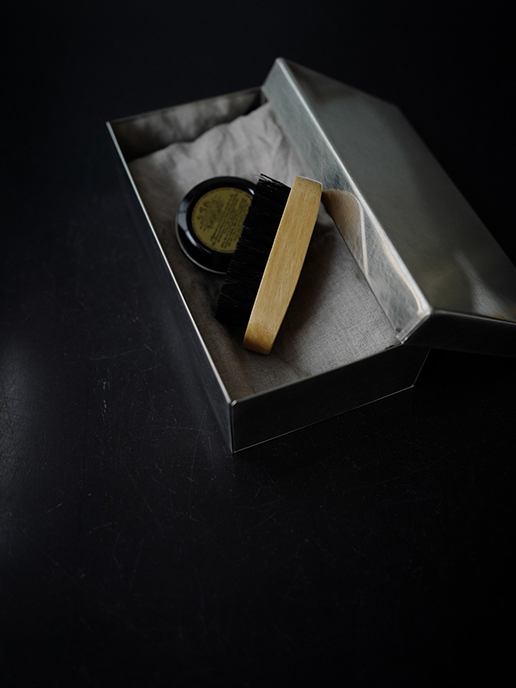

我们每天都在使用很多东西。
杯子。
毛巾。
收纳盒。
托盘。
一张纸。
它们太普通了。
普通到我们很少停下来想：
“为什么这个东西用起来这么舒服？”
可能是因为它刚好放在那里。
刚好够大。
刚好够轻。
刚好拿起来很顺手。
也可能只是因为，
用了很久以后，
你已经习惯了它存在于生活里的某个位置。
好的设计有时候就是这样。
它不一定需要第一眼就吸引你。
甚至不需要你注意到它。
它只是安静地，
让每天的生活变得舒服一点。
SyuRo：Designed for Everyday Life

SyuRo 是一家来自东京的设计品牌。
1999 年，
宇南山加子以设计公司为起点创立 SyuRo。
后来，
它逐渐发展出自己的生活用品，
也与日本各地的工匠、
制造者以及不同领域的人合作。
它做的东西并不复杂。
金属盒、纸品、毛巾、布料、陶器和木制品。
但这些东西背后，
有一个很简单的想法：
它没有急着让普通的东西变得特别。
而是重新看看，
那些我们每天都在使用，
却已经习以为常的东西。
也许真正值得设计的，
一直就在我们身边。
SyuRo 做的东西，很少让人觉得“只能放在那里欣赏”。
它们本来就是生活用品。
可以放在桌上。
可以放进抽屉。
可以拿在手里。
可以洗。
可以每天使用。
它没有把设计和生活分开。
一只盒子，
可以让桌面变得整齐。
一条毛巾，
可以让洗完手的那几秒舒服一点。
一个杯子，
可以让普通的喝水时间，
多一点感觉。
这些事情都很小。
但生活本来就是由很多这样的小事情组成的。
SyuRo 让我觉得，
设计并不一定要制造一个“特别的东西”。
有时候，只是把一件每天都会用到的东西，认真地做好。
Finding Value in Ordinary Things

我很喜欢 SyuRo 对“普通”的看法。
它不会因为一个东西太普通，
就认为它没有设计的价值。
相反，
它会从那些已经存在的东西里，
重新寻找值得留下来的部分。
比如一个收纳盒。
我们真正需要的，
可能只是一个大小合适、
拿起来方便、
放在哪里都不会觉得突兀的盒子。
又或者是一条毛巾。
真正让人在意的，
可能不是它有多特别，
而是接触皮肤的时候，
有没有舒服一点。
不是把东西装饰得更漂亮， 而是让我们重新发现它原本就有的价值。
所以很多时候，好的设计并不会站出来告诉你： “看，我设计得很好。”
它只是让你在使用的时候， 觉得一切都很自然。
Materials You Can Feel

有些东西，光看照片其实很难理解。
你必须真的拿起来。
摸一摸。
打开。
用一次。
才会知道它为什么舒服。
SyuRo 很少试图把材料本身藏起来。
金属就是金属。
纸就是纸。
木头还是木头。
布料也保留着自己的触感。
它们没有被过度修饰， 反而让材料本来的样子成为设计的一部分。
我尤其喜欢这种感觉。
因为有时候，材料本身就已经很好看了。
金属的冷。
木头的温度。
纸张的轻。
布料贴近皮肤时的柔软。
这些东西不需要被解释太多。
好的设计，有时候不是改变材料， 而是知道什么时候应该让材料自己说话。
Made by People

SyuRo 有趣的地方， 不只是“设计了什么”， 还有它选择和谁一起完成这些东西。
日本传统工艺。
熟练的工匠。
不同地区的制造者。
甚至福祉设施所制作的物品。
SyuRo 会把这些不同的技术、材料和想法， 放进自己的设计里。
有时候，它甚至会去尝试原本被认为“不太可能”的做法。
不是简单地把传统工艺复制一次， 而是想办法让它进入今天的生活。
这也是为什么， 有些 SyuRo 的东西看起来很简单， 却会让人觉得有一点特别。
因为它背后不是只有一个设计概念。
还有材料。
技术。
人的经验。
以及一次次沟通以后， 才形成的结果。
我喜欢这种“有人参与其中”的设计。
你看到的虽然只是一个物品， 但它并不是凭空出现的。
The Beauty of Less
我们现在看到的东西越来越多。
更多颜色。
更多功能。
更多选择。
更多新的设计。
可是 SyuRo 给我的感觉， 恰恰相反。
它没有急着增加什么。
有时候，
只是把一个盒子做好。
把一块布做好。
把一张纸做好。
把一个每天都会使用的东西， 做得刚刚好。
少一点装饰。
少一点多余。
让真正需要的部分留下来。
这种“少”， 并不是为了让东西看起来极简。
而是因为， 生活本身已经有很多东西了。
一个物品如果能够安静地待在其中， 不抢走注意力， 却又确实让事情变得方便， 其实已经足够了。
不是让东西变得更显眼， 而是让生活本身变得更舒服。
A Little More Than Just Design

我后来发现， SyuRo 真正在意的， 好像不只是“东西长什么样”。
它也在意人与东西之间的关系。
一件东西被制造出来以后， 会被谁使用？ 会放在哪里？ 会不会被一直留下来？
会不会因为人的参与， 产生原本没有的意义？
SyuRo 把这种人与物之间的关系， 也看作设计的一部分。
这让我想到， 我们真正喜欢的一些东西， 可能并不是因为它们特别漂亮。
而是因为它们已经进入了我们的生活。
每天伸手就能拿到。
知道它应该放在哪里。
知道它用起来是什么感觉。
甚至不需要特别想起它。
它已经成为生活的一部分， 而这本身，也许就是一种设计成功的方式。
为什么 Soft Archive 想留下 SyuRo？
我喜欢 SyuRo， 是因为它让我重新注意到那些很容易被忽略的东西。
一个盒子。
一条毛巾。
一只杯子。
它们没有什么惊天动地的故事。
却每天都在我们的生活里。
我们很少认真想过，
为什么它应该是这个大小。
为什么摸起来是这样的感觉。
为什么放在那里刚刚好。
那些看不见的部分， 其实也可以成为设计。
也许生活里的好设计， 本来就不需要一直提醒我们它的存在。
它只需要在那里， 然后让我们觉得：
“这样很好。”
藏在使用里的细节
我喜欢 SyuRo 很少把“设计感”放得太大。
你不会第一眼就觉得： “这是一个很有设计的东西。”
可是拿起来以后， 你会慢慢发现一些小地方。
一个边缘。
一个开合的方式。
一种触感。
一个刚刚好的尺寸。
它们没有特别抢眼。
甚至很容易被忽略。
可是用了几次以后， 你会发现： 原来这里是这样设计的。
我喜欢这种藏在使用里的细节。
不需要被看见， 却确实在那里。
让我记住 SyuRo 的几个细节
- 1999 年开始，SyuRo 最初是一家设计公司。
- 从产品设计延伸到空间、品牌、室内与造型等不同领域。
- 产品横跨金属、纸、布、陶器、木材等多种材料。
- 与日本传统工艺、工匠技术以及不同制造者合作。
- 不只是重新设计物品，也尝试让传统技术进入现代生活。
- 很重视材料本身的质感，以及人与物之间的关系。
- 位于东京鸟越的 SyuRo 店铺，同时也是工作室与展示空间。
- 将“发现看不见的价值”作为自己对设计的理解。
- 而我最喜欢的一点是： 它没有把“生活用品”当成低于“设计品”的东西。
Tin Box

A box that quietly belongs to everyday life.
一个盒子而已。
可是我很喜欢它的简单。
它没有试图把“收纳”变成一件复杂的事情。
只是让桌面上的一些小东西，
有了一个可以回去的地方。
钉子。
纽扣。
胶带。
纸片。
小工具。
甚至咖啡豆、茶叶或调味料。
什么都可以。
SyuRo 找到的是东京下町传统的制罐工艺， 再把它变成了一件可以进入日常的东西。
黄铜、铜和马口铁，
刚开始都有各自鲜明的颜色。
随着时间过去，它们会慢慢发生变化。
盒子的形状却一直保持简单。
没有多余的装饰， 也没有规定它应该放什么。
最后，你甚至不会特别注意这个盒子。
因为你已经习惯了，
它一直在那里。
SyuRo
This archive might be for you if…
- 如果你喜欢那些不会急着吸引你的东西。
- 如果你喜欢木头、纸、金属这些自然的触感。
- 如果你觉得一个好用的盒子，本身就值得被认真设计。
- 如果你喜欢那些用了很久以后， 才发现自己已经离不开的东西。
- 如果你喜欢安静、不张扬， 却会慢慢融入生活的设计。
值得收藏的，
不一定是最特别的东西。
有时候，
只是那些让普通日子变得更有温度的东西。
然后继续过完，
很普通的一天。
Where this archive comes from
More quiet things worth keeping.
Return to the archive and discover another ordinary thing, another small detail, another story.
Explore the Archive →